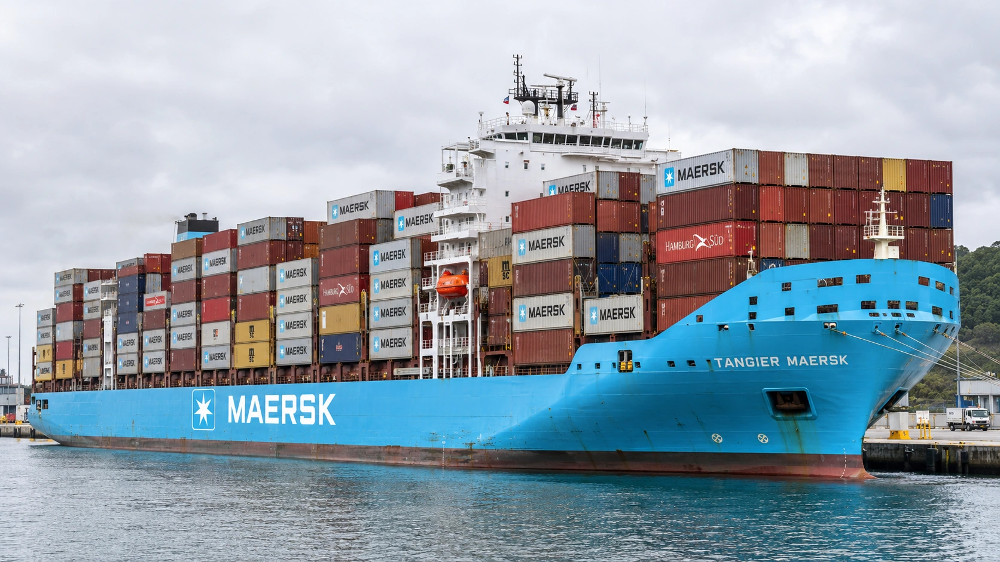

Maersk Raises Its Outlook, but Investors Question the Freight Windfall
Higher freight rates lifted quarterly earnings and the annual forecast. Investors must assess how much of that improvement can survive a normalization of shipping capacity.

A.P. Moller–Maersk raised its full-year earnings forecast on November 5 after a stronger third quarter, but the improvement failed to satisfy the stock market. Reuters reported an intraday share-price decline of about 11%. Investors were assessing how the revised outlook compared with expectations and how long unusually favorable freight conditions could last.
The company now forecasts underlying EBITDA of $14.0 billion to $14.5 billion for 2026, compared with $10.5 billion to $12.5 billion previously. Its underlying EBIT forecast rises to $8.0 billion to $8.5 billion from $4.5 billion to $6.5 billion. Expected free cash flow increases to more than $3 billion from more than zero.
Those revisions establish a stronger expected financial year. They do not establish the level of earnings Maersk could sustain once congestion eases and vessels move more freely. Shipping capacity available to customers can change without an equivalent change in the number of ships. That distinction is central to understanding the current earnings improvement.
Rates carry more of the earnings story
Quarterly revenue increased 27% to $18.1 billion, while EBITDA reached $4.7 billion from $2.7 billion a year earlier. Maersk said the Shanghai Containerised Freight Index averaged 46% above the preceding quarter. Its Ocean business produced $2.6 billion of EBIT, compared with $567 million a year earlier.
A rise in transport prices can increase a carrier’s earnings faster than the cargo it carries. When ports are congested or routes become longer, a vessel completes fewer useful trips over a given period. Customers compete for a smaller amount of immediately available capacity even if the physical fleet has not shrunk. The resulting price support can be powerful, but its duration remains uncertain.
For a manufacturer or retailer buying transport, the same conditions can mean higher costs and less reliable delivery schedules. The carrier’s stronger quarter therefore cannot be read as a straightforward signal that its customers are selling substantially more goods. Transport pricing, service reliability and final demand need separate assessments.
Cash generation gives the forecast practical weight
The interim report shows operating cash flow of $4.4 billion and capital expenditure of $1.2 billion during the quarter. Reported free cash flow was $2.4 billion, up from $771 million a year earlier. By the end of September, Maersk had executed $841 million of its approximately $1 billion share-buyback program.
Those figures provide a different perspective from an earnings multiple alone. Cash generated during a strong market gives a company resources to invest, maintain financial flexibility or return capital. The choices still compete with one another. Cash spent buying shares is no longer available for a vessel order, a logistics investment or protection against a weaker freight market.
Our guide to free cash flow explains why operating earnings and spendable cash can move differently. For a carrier, the investment cycle is especially relevant: ships require large commitments well before they earn revenue. A strong quarter can fund those commitments without proving that future deliveries will enter an equally favorable market.
A forecast upgrade can still disappoint
A share price reflects what investors already expected, including improvements they anticipated before a company formally changed its guidance. Raising a forecast is favorable relative to the previous official range. The same revision can disappoint investors who had incorporated a larger increase into their valuation.
Our explanation of earnings expectations sets out that distinction. The observed market reaction does not make the reported operating improvement disappear. It shows that reported growth and a favorable surprise are different judgments. The first compares results with a historical period; the second compares them with the market’s prior assumptions.
The durability of the freight environment is part of that comparison. If congestion releases capacity back into the network, customers could have more transport options without a surge in new ship deliveries. Alternatively, persistent disruption could keep equipment occupied for longer. Neither outcome should be treated as settled simply because the latest quarter was profitable.
The next comparison is between cash and commitments
For the coming reporting periods, the useful evidence will include realized freight rates, cargo volumes, service reliability and the cash required to support operations. A company can maintain a busy fleet while the price earned on each shipment changes. Revenue growth alone would not show which of those forces is dominating the next quarter.
Maersk’s revised forecast gives investors a higher earnings and cash-flow baseline for this year. The valuation question extends beyond that baseline to the returns earned on capital through a more ordinary shipping cycle. November’s results demonstrate the financial benefit of current conditions; they leave the length of that benefit to be established by subsequent trading.